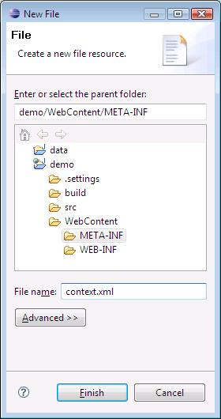

Introduction
Creating database-driven web applications in Java has traditionally involved a steep learning curve. Even if you already know how to write Java programs, and have a basic understanding of web applications, the Java Enterprise Edition (Java EE) stack is daunting. Learning to use the Servlet API and JavaServer Page (JSP) technology to generate dynamic content is just the beginning. Installing and configuring an open source Java EE web application server and a DBMS, and getting them to talk to each other, can require significant developer effort.
In this article, I will demonstrate how the combination of Eclipse Web Tools Platform, Eclipse Data Tools Platform, Tomcat, and Derby help to "lower the bar" by virtually eliminating the server administration issues, allowing developers to focus on the task at hand: building the web application. I will assume that you understand the basics of SQL, and are familiar with HTML and basic web application concepts.
Prerequisites
You will need the following software to build the project:
Eclipse IDE for Java EE Developers 3.3
Eclipse can be downloaded from http://www.eclipse.org/downloads/. The Eclipse IDE for Java EE Developers distribution packages together all of the Web Tools Platform components and their dependencies in a convenient all-in-one download archive. To install, simply extract the archive to your hard drive.Tomcat 6.0
Available from http://tomcat.apache.org/download-60.cgi. This tutorial was written using version 6.0.14.
Note: If you're a Windows user, I recommend downloading the zip distribution and extracting it, instead of getting the packaged Tomcat installer, which installs Tomcat as a Windows service (not an appropriate configuration for use with Eclipse WTP).Derby Plugin for Eclipse
Get the Derby Plugin for Eclipse (derby_core_plugin_10.2.2.zip and derby_ui_plugin_1.1.0.zip), available at http://db.apache.org/derby/derby_downloads.html.
Note: The plugins contain the Derby engine. You don't need to download the standard Derby distribution for this tutorial.JRE 6.0
Sun's JRE is available from http://java.com/en/download/manual.jsp
Getting Started with Derby
Derby is an open-source pure-Java Database Management System (DBMS). I picked it as the DBMS for this article because it is freely available, integrates nicely with Eclipse, runs on all platforms that Eclipse runs on, and, most importantly, is far simpler to install and administer than traditional DBMS's.
Like most popular DBMS's, Derby has a client/server architecture. The Derby engine runs as a server process, accepting connections from client applications. To use Derby, you start the Derby server, then you use Java database management tools to connect to the Derby server, create and populate databases, run queries, and so on. The Derby plugin for Eclipse described in this article integrates the Derby server controls into Eclipse, so you can start and stop the Derby server from the Eclipse environment. The plugin also stores the database files in the workspace, simplifying backup.
Installing the Derby plugin for Eclipse is fairly straightforward. Here's how to do it.
Unzip the two Derby Eclipse plugins (derby_core_plugin_10.2.2.zip and derby_ui_plugin_1.1.0.zip) into your eclipse installation folder (ECLIPSE_ROOT). Detailed instructions are available here: http://db.apache.org/derby/integrate/plugin_howto.html#Installing+the+plug-ins
In your ECLIPSE_ROOT/plugins folder, you should have a folder named org.apache.derby.core_10.2.2. Copy the file derbyclient.jar from that folder to your TOMCAT_ROOT/lib folder (if you're using Tomcat 5.x, install into TOMCAT_ROOT/common/lib). This installs the Derby JDBC driver into Tomcat for use in a DataSource.
Eclipse organizes files in the workspace into projects. When you use the Derby plugin for Eclipse, you create an empty Java project, and then you "Derby enable" it. This project then becomes the repository for all of the Derby databases that you create in your workspace.
Follow these steps to create a Derby data project in Eclipse:
Start Eclipse. If you have an existing Eclipse workspace, I suggest choosing a new workspace folder for this tutorial.
Choose Window > Preferences from the menu to open the Eclipse Preferences dialog. Navigate to Connectivity > Driver Definitions. Select the Derby 10.2 folder and click Add....
In the New Driver Definition dialog, select Derby Client JDBC Driver and click OK.
In the Provide Driver Details dialog, select the derbyclient.jar file and click Edit Jar/Zip. Navigate to the location of the derbyclient.jar file on your system and click OK.
Click OK in the Preferences dialog.
Create a new Java project by selecting File > New > Other. Select Java > Java Project and click Next. Enter the name data for the project, choose the option to create separate source and output folders, and click Finish.
This project will hold your Derby database for this tutorial. In the Package Explorer, right-click your new project and choose Apache Derby > Add Apache Derby Nature. This action marks the project as a Derby project, capable of storing one or more Derby databases.
Next, right-click your data project and choose Apache Derby > Start Derby Network Server.

This action starts the Derby server. You should see the following message appear in the Eclipse Console:

The Derby server will run as long as you have Eclipse open. If you close Eclipse, the next time you start Eclipse, you will need to start the Derby server again. The server accepts connections only from the local host, which is just what you want for a development database.
Creating a Derby Database
Now that you've installed Derby and started the Derby server, you will create a new database to hold the data for your web application.
To create a new Derby database, you must use a Java DBMS management tool to connect to the Derby server with a specially formatted connection string that includes the name of the database you want to create, and an option that tells the Derby server to create the database. Here's how to accomplish the task using the Eclipse Data tooling included with the Eclipse IDE for Java EE Developers.
Select Window > Open Perspective > Other. Choose Database Development from the list.
In the Data Source Explorer view, right-click the Databases folder and choose New.
In the New Connection Profile dialog, choose SQL Model-JDBC Connection, and click Next. (We won't be using the Derby Embedded Database option, which prevents multiple JVM's from concurrently accessing the database.)
On the next page, enter the name sample for your database and click Next. Leave Auto-connect at startup unchecked.
Fill out the final page as shown. Note carefully the selections: Choose the Derby Client JDBC Driver from the driver dropdown; accept the default Database name ("SAMPLE"); use any non-blank User ID and non-blank password (the password is ignored by Derby).
Click Finish. The connection wizard will display a new connection in the Databases folder named sample. Right-click the sample icon and choose Connect to open the connection. This will cause Derby to create the database. The database files are stored in a folder named sample in your data project. If you want to see them, switch to the Java perspective, right-click the data project and choose Refresh.
-

To create a backup of your Derby database, simply stop the Derby server, make a copy of the sample folder and its subfolders, and restart the server. Restoring the database is just as simple: stop the server, replace the sample folder structure with the backup copy, and restart the server.
Now that the database is created, it's time to create a table for our application and populate it with some data. The current version of the Data tooling doesn't include any wizards to create a table, so we'll create a table using SQL Data Definition commands.
To execute SQL commands using the Eclipse Data tooling, you will create a SQL File, which provides an editor that allows you to enter and execute SQL statements.
Choose File > New > SQL File. Click Next, and enter scratch (or whatever) as the filename. Select sample from the Connection profile name dropdown, and select SAMPLE from the Database name dropdown to associate the SQL file with your Derby sample database. Click Finish.
A blank SQL editor will open. Copy and paste the following code into the editor:
CREATE TABLE app.posts ( post_id INTEGER PRIMARY KEY GENERATED ALWAYS AS IDENTITY (START WITH 1, INCREMENT BY 1), postname VARCHAR(50), comments VARCHAR(512) NOT NULL ); INSERT INTO app.posts(postname, comments) VALUES('Fred Jones', 'Derby is cool, and the Eclipse plugin makes using it a snap!'); INSERT INTO app.posts(postname, comments) VALUES('Wilma Harris', 'Tomcat lets me register DataSources using a file in my web project? That''s great stuff!');Right-click in the editor and choose Execute All.
The SQL Results tab will appear to show the results of the execution.
Now, back on the Data Source Explorer tab, browse to find the table that was created. Right-click the Posts table and choose Data > Edit to view the contents in an editable grid.
Creating a Web Project
Now that the database is in place, we're ready to begin creating our web application. A Java EE web application consists of a collection of dynamic resources (such as Servlets, JavaServer Pages, and other Java classes), static resources (HTML pages and images), and configuration files, all organized in a standardized directory. Eclipse helps you organize your web applications using a type of project called a Dynamic Web Project. When you create a Dynamic Web Project, you must select a Java EE web application server, which provides libraries needed by the project.
Follow these steps to create the project.
Select File > New > Other. Select Web > Dynamic Web Project and click Next. Enter the Project Name demo, and click New beside the Target runtime dropdown.
Select Tomcat 6.0 and click Next.
Select your Tomcat 6.0 installation folder (the root folder of the extracted Tomcat download archive). Click Finish.
Back in the New Dynamic Project wizard, click Finish to create the project.
The application will use JSP tag libraries that you must download and install into your project. Browse to http://jakarta.apache.org/site/downloads/downloads_taglibs-standard.cgi and download the jakarta-taglibs-standard-1.1.2.zip distribution (or, you can get them from the completed sample that accompanies this article). Copy the jstl.jar and standard.jar files from the download archive into your project's WebContent/WEB-INF/lib folder. When you've done this, you may need to right-click on the project and choose Refresh. In the Java EE Perspective's Project Explorer, you should see them listed both under Web App Libraries and under the WEB-INF/lib folder as shown here (note that if you're using the Java perspective, with the Package Explorer, you won't see them in the WEB-INF/lib folder):
Next, we'll tackle the issue of database connection management for our application. Servlets and JSP pages that access a database are usually designed to obtain a database connection for each incoming request, and release the connection when the request has finished processing. Since opening and closing database connections is usually an expensive operation, an efficient web application makes use of JNDI connection pooling to speed up database access. The application server maintains a pool of connections to the database, and makes them available to the web application via a DataSource object.
Since connection pools are managed by the application server, not the web application, configuring connection pooling can be a pain. Fortunately, Tomcat 6.0 makes it really easy. Tomcat allows the developer to configure the database connection pool using a configuration file in the web project. We'll use that feature to simplify this tutorial.
-
The technique discussed here also works for Tomcat 5.5. If you are using Tomcat 5.0 or older, or another application server, you must consult your application server for information on configuring a DataSource.
Choose File > New > File, select the META-INF folder, and enter the name context.xml.
Copy and paste the following into your context.xml file (you may have to click on the Source tab at the bottom of the editor to be able to paste). This defines a DataSource with the name "jdbc/SampleDB". Our application will retrieve database connections from the pool using this name.
<?xml version="1.0" encoding="UTF-8"?> <Context> <Resource name="jdbc/SampleDB" auth="Container" type="javax.sql.DataSource" username="app" password="app" driverClassName="org.apache.derby.jdbc.ClientDriver" url="jdbc:derby://localhost:1527/sample" maxActive="8" /> </Context>
-
If you want to use a different DBMS, simply change the driverClassName and url to values appropriate for your database, and make sure you install your DBMS's JDBC driver in Tomcat's common/lib folder.
Writing the Application
Standard Java EE web applications use servlets and JSPs to generate dynamic content. For this tutorial, we'll create a JSP page to allow the user to interact with the database. You don't have to know Java to write JSPs; the JSP Standard Tag Library provides all the capabilities a simple database application needs.
We'll begin with a simple page that displays the comments in the Posts table.
-
Choose File > New > File. Fill out the dialog as shown, making sure that the WebContent folder is highlighted.
Next, paste the following code into the page:
<%@ page language="java" contentType="text/html; charset=ISO-8859-1"%>
 <%@ taglib prefix="sql" uri="http://java.sun.com/jsp/jstl/sql" %>
<%@ taglib prefix="c" uri="http://java.sun.com/jsp/jstl/core" %>
<%@ taglib prefix="sql" uri="http://java.sun.com/jsp/jstl/sql" %>
<%@ taglib prefix="c" uri="http://java.sun.com/jsp/jstl/core" %>
 <sql:setDataSource dataSource="jdbc/SampleDB" />
<!DOCTYPE HTML PUBLIC "-//W3C//DTD HTML 4.01 Transitional//EN">
<html>
<head>
<title>Speak To Me, Please</title>
</head>
<body>
<h1>Speak To Me, Please</h1>
Welcome to the Acme Corp. feedback site.
<h2>Here's what your fellow workers have said:</h2>
<table border='1'>
<tr><th>Worker</th><th>Comment</th></tr>
<sql:setDataSource dataSource="jdbc/SampleDB" />
<!DOCTYPE HTML PUBLIC "-//W3C//DTD HTML 4.01 Transitional//EN">
<html>
<head>
<title>Speak To Me, Please</title>
</head>
<body>
<h1>Speak To Me, Please</h1>
Welcome to the Acme Corp. feedback site.
<h2>Here's what your fellow workers have said:</h2>
<table border='1'>
<tr><th>Worker</th><th>Comment</th></tr>
 <sql:query var="qryPosts" >
SELECT postname, comments FROM app.posts
</sql:query>
<sql:query var="qryPosts" >
SELECT postname, comments FROM app.posts
</sql:query>
 <c:forEach var="row" items="${qryPosts.rows}">
<tr>
<c:forEach var="row" items="${qryPosts.rows}">
<tr>
 <td><c:out value="${row.postname}" /></td>
<td><c:out value="${row.comments}" /></td>
</tr>
</c:forEach>
</table>
</body>
</html>
<td><c:out value="${row.postname}" /></td>
<td><c:out value="${row.comments}" /></td>
</tr>
</c:forEach>
</table>
</body>
</html>
- The taglib directives allow the use of the
<sql:> and <c:> tags from the JSP Standard
Tag Library.
- The <sql:setDataSource> tag references the JNDI DataSource whose attributes
are defined in the context.xml file you created earlier. The JSP engine retrieves a connection from
the DataSource for use by queries later in the page.
- The <sql:query> tag executes a query against the database and exposes
the results in a JSP page variable named qryPosts.
- The <c:forEach> tag iterates over the results of the query. The items expression "${qryPosts.rows}" references the collection
of rows returned from the query and exposed via the qryPosts JSP variable.
The body of the
<c:forEach> tag emits a row of the HTML table for each row in the query result
set. Each time the body is evaluated, the iterator variable row references
the next row of the query result set.
- The <c:out value="${row.postname}" /> expression inserts the value of the postname field of the current
row of the result set.
If you're using an application server other than Tomcat 6.0, and you don't know how to configure a DataSource, you can embed the connection attributes directly in the JSP page. You won't get connection pooling, but you can at least get the sample working by replacing line
<% Class.forName("org.apache.derby.jdbc.ClientDriver"); %> <sql:setDataSource dataSource="jdbc:derby://localhost:1527/sample" user="app" password="app" />If you do this, you may also find it necessary to copy the derbyclient.jar file to your project's WEB-INF/lib folder to make the JDBC driver class available to your application.
Testing the Application
We haven't finished the application yet, but let's take a break from coding to test the existing functionality.
-
Right click on demo.jsp and select Run As > Run on Server. Select the Tomcat 6.0 server, and click Finish.
-
Eclipse starts the Tomcat application server. After the server starts, you should see a page like this.
Note: If Eclipse has problems starting the server, make sure you don't already have Tomcat running on your system. If you have an instance of Tomcat running, you should stop it before trying to test your application in Eclipse. -
Try adding a new row to the Posts table using the Eclipse table editor I mentioned earlier. After you save the new row, you should be able to click Reload in the web browser, and the new row should appear.
Letting Users Leave Feedback
This application doesn't allow users to contribute feedback. Let's enhance the JSP page to provide a form that users can fill out to add comments.
Switch to the JSP editor and copy and paste the following code just above the closing </body> tag:
When the user clicks the
submit button on this form, the
name and
comments entered by the user will be submitted to
the
demo.jsp page for processing. A message indicating
success or failure will be placed in a JSP variable named
msg to inform the user of the result of the processing.
Next, we need to write the code to process the form submission. Insert the following code at the top of the page, after the <sql:setDataSource> tag:
<c:set var="msg" value="Thank you for your feedback." /> <c:set var="name" value="" /> <c:set var="comments" value="" /> </c:when> <c:otherwise>
<c:set var="msg" value="Please supply some comments." /> </c:otherwise> </c:choose> </c:if>
Notes about the code:
- When the user submits the form, his name and comments are submitted to the JSP page.
The <c:set> statements retrieve those values and place them in local JSP variables
named name and comments.
- If this is a form submission, the action parameter will be "Submit", and the code
inside the <c:if> block will execute to process the submission. On the initial page load, the action parameter will be empty, and the code inside the <c:if>
block will not execute.
- The user may opt to omit his name, but must supply some comments. The
<c:when> test verifies
that the comments variable is not blank.
- The <sql:update> tag is used to execute an INSERT, UPDATE, or DELETE statement
against the database. The question marks (?) indicate places in the query where
user input is substituted.
- The <sql:param> tags supply values for the ? placeholders.
- The contents of a JSP variable named msg is displayed at the bottom of
the form. Here, msg is set to indicate to the user that the submission
was successfully saved.
- If the user failed to enter comments, this code is executed, and sets msg
to indicate to the user why the submission could not be successfully processed.
After entering this code, save the changes. Switch back to the browser view and click Reload. You should see a form appear:
Try entering some comments and clicking Submit. The page should process the submission, and you should see your comments appear in the table. Check the database table using the table editor; you should find that the comments have been saved there.
Deploying the Database
When you are ready to deploy the application to a production Tomcat application server, you must copy the Derby database data folders to the application server computer. You then have a couple of options for accessing the Derby database from your deployed application.
-
You can install Derby on the application server computer, and run it in client/server mode. Your application connects to the database using the same technique as I've demonstrated in this article. The drawback to this approach is that you have two server processes to manage: Tomcat and Derby.
-
You can use Derby in embedded mode. In this scenario, the Derby engine runs inside the Tomcat process. You don't have to stop and start Derby separately from Tomcat. For more information, refer to the Derby website.
Summary
The Eclipse Web Tools Project, combined with Tomcat 6.0, Derby, and the Eclipse Data Tools Project, reduces the burden of server administration, delivering a convenient platform for Java EE database web application development. This article demonstrated how to construct a simple Java EE web application using these tools.
Resources
The completed sample is available. You can import it into Eclipse by renaming it to demo.war, choosing File > Import, and selecting Web > WAR File. Note that the database is not included; you must set that up following the instructions in the article.
If you want to know more about JSP application development, here are some resources that can help.
- http://java.sun.com/products/jsp/docs.html
Sun JSP Documentation - http://java.sun.com/products/jsp/jstl/1.1/docs/tlddocs/index.html
JSTL Quick Reference - http://jcp.org/aboutJava/communityprocess/final/jsr052/index2.html
JSTL Specification and Reference - http://www.eclipse.org/webtools/
Eclipse Web Tools Platform - http://www.eclipse.org/datatools/
Eclipse Data Tools Platform - http://tomcat.apache.org/
Tomcat - http://db.apache.org/derby/
Derby - http://en.wikipedia.org/wiki/SQL
SQL